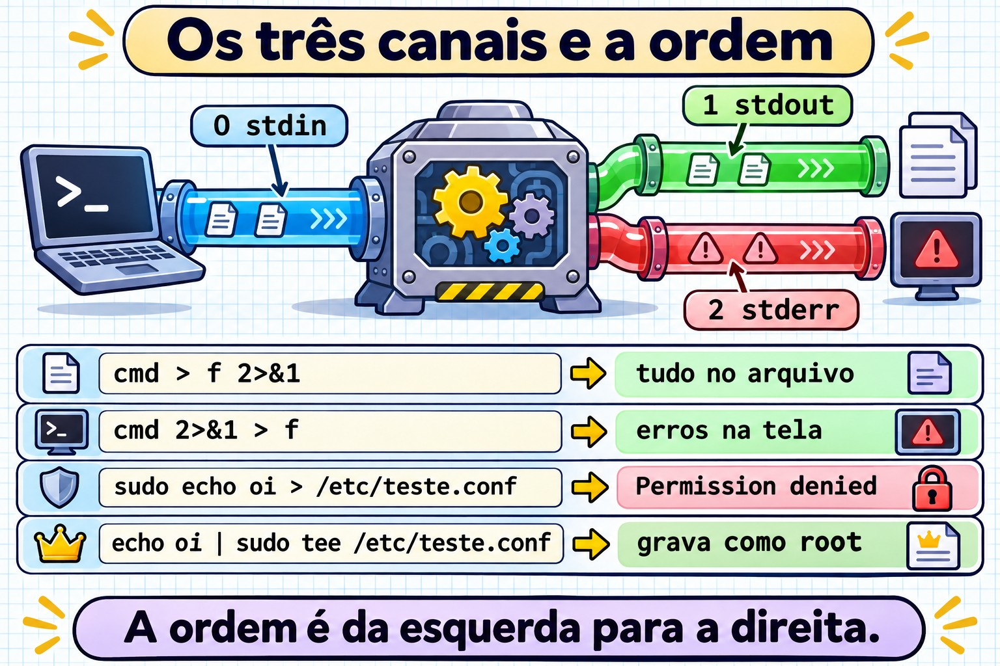
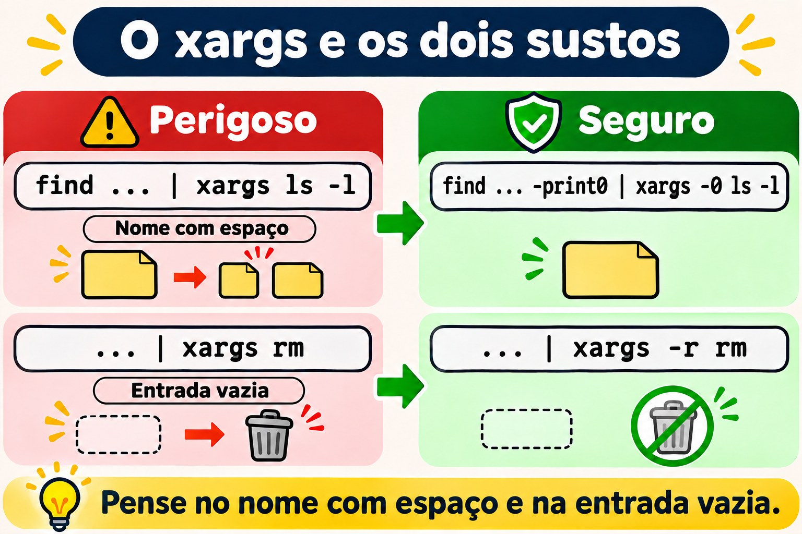
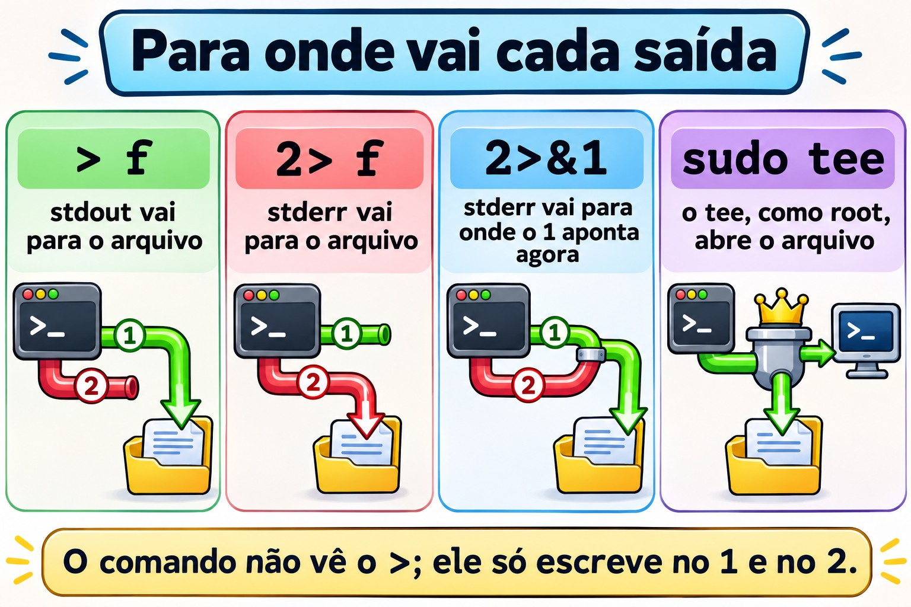
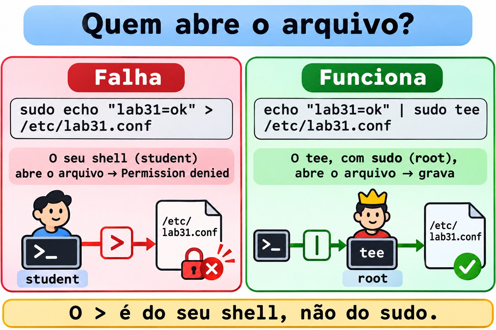
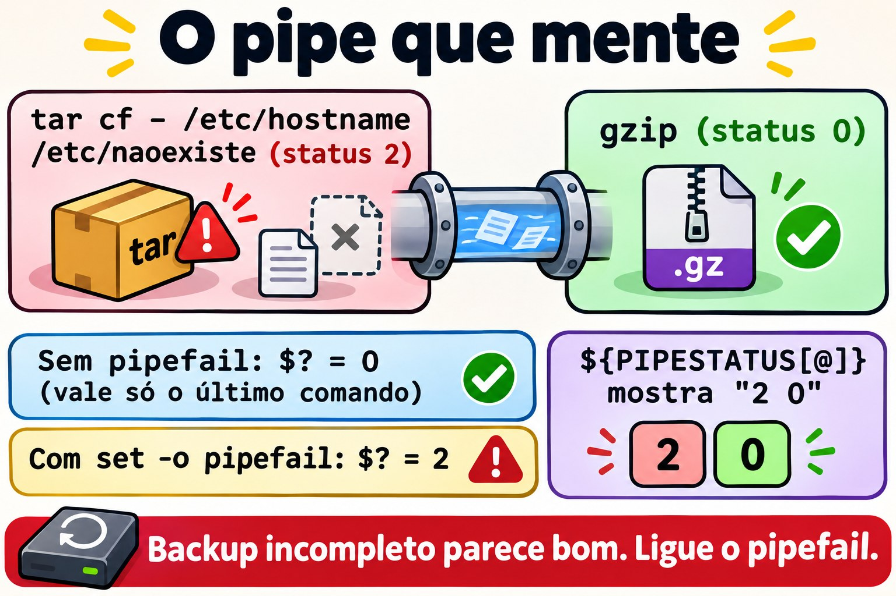
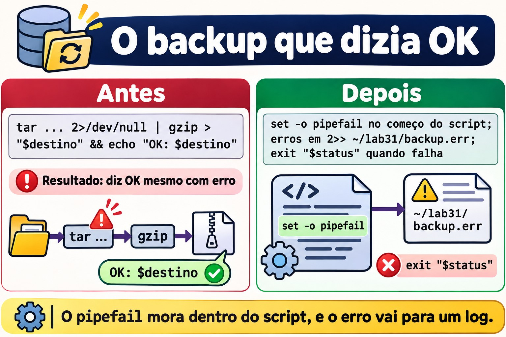

Aula 3.1 · Fluxos a fundo
Primeira aula do Módulo 3 e da Fase 2. No Módulo 2 você montou usuários, grupos e uma pasta de equipe que funciona de verdade. Duas vezes, na Aula 2.7 e na Aula 2.8, um comando com sudo falhou por um motivo que não era permissão: o * foi expandido pelo seu shell, antes de o sudo começar. Hoje você entende essa família inteira de problemas. O shell monta os fluxos de um comando (de onde ele lê, para onde escreve, onde vão os erros) antes de rodá-lo, e quem não sabe disso escreve sudo echo ... > /etc/arquivo, perde erros de backup dentro de um pipe e apaga o arquivo errado com um xargs. Na Aula 1.6 você viu >, >>, 2> e |. Agora vêm as ferramentas que o admin usa todo dia: tee, xargs, here-doc, substituição de processo, /dev/null e o pipefail, que faz o pipe parar de esconder erro.
| Ficha | Aula 3.1 |
|---|---|
| Módulo | M3 · Texto e editor, aula 1 de 5 |
| Quando | Semana 7 |
| Ao final você consegue | Prever o resultado de qualquer combinação de >, >>, 2>, 2>&1 e &>, inclusive a ordem; gravar em arquivo do root com sudo tee, sem cair no sudo echo >; criar arquivos de configuração com here-doc, sabendo quando o shell expande variáveis e quando não; usar xargs com nomes que têm espaço, e com entrada vazia, sem surpresa; comparar a saída de duas VMs com diff <( ) <( ); fazer um pipe de backup que falha quando deve falhar, com pipefail e PIPESTATUS; explicar por que um script #!/bin/sh se comporta diferente na Rocky e na Debian |
| Pré-requisitos | Aula 1.6 (redirecionamentos e pipes básicos); Aula 2.5 (sudo); Aula 2.7 e Aula 2.8 (o * expandido antes do sudo, e o sudo sh -c); as duas VMs acessíveis, e o ssh deb funcionando |
| Tempo | Cerca de 2h30 |
| Snapshots | m3a1-inicio e m3a1-fim nas duas VMs |
1 · Aquecimento
Três perguntas, de cabeça. Escreva as respostas; o Gabarito confere no fim.
- Você roda
sudo echo "nameserver 1.1.1.1" > /etc/resolv.confe recebePermission denied. Osudoestá configurado e funcionando. Palpite: por quê? - Um script de backup faz
tar cf - /dados | gzip > /backup/dados.tar.gze termina comecho "status: $?". Otarfalha no meio por falta de permissão. Palpite: o status mostra0ou outro número? cmd > saida.txt 2>&1ecmd 2>&1 > saida.txt. Palpite: os dois guardam os erros no arquivo?
2 · Por que importa
Fluxos parecem assunto de iniciante até virarem incidente:
| O chamado | A resposta errada | O que ela causa |
|---|---|---|
"Preciso adicionar uma linha no /etc/hosts pelo script" | sudo echo "10.1.0.60 app" >> /etc/hosts | Permission denied. Na pressa, alguém troca por chmod 666 /etc/hosts, e o arquivo fica aberto para qualquer conta |
| "O backup roda toda noite e diz OK, mas o arquivo tem 40 bytes" | Confiar no $? do fim do pipe | Meses de backups vazios. O status é o do gzip, que comprimiu com sucesso um nada |
| "O cron manda e-mail toda madrugada, desliga isso" | Acrescentar > /dev/null 2>&1 em tudo | O e-mail para, e com ele o único aviso de que o job falha há semanas |
"Apaga os .tmp antigos da pasta de uploads" | find /srv/uploads -name '*.tmp' | xargs rm | O arquivo relatorio final.tmp vira relatorio e final.tmp; se existir um relatorio, ele some no lugar |
| "O script funciona na Rocky e dá erro de sintaxe na Debian" | Reescrever o script na Debian | Duas versões do mesmo script. O problema era o #!/bin/sh: na Debian, o sh não é o bash |
Quem resolve de verdade sabe quem abre cada arquivo, quando e com qual identidade. É isso que você treina hoje.
3 · Modelo mental
Todo processo nasce com três canais numerados, os descritores de arquivo:
0é a entrada (stdin),1é a saída (stdout) e2é a saída de erros (stderr). Redirecionar é o shell trocar para onde cada número aponta, antes de o comando começar, lendo da esquerda para a direita. O comando nunca vê o>: ele só escreve no1e no2, sem saber se é tela, arquivo ou pipe.
Você digita: sudo echo oi > /etc/teste.conf
└─────┬─────┘ └───────┬───────┘
│ └─ 1º: o SEU shell (student) abre /etc/teste.conf
│ para escrita. Falha aqui: Permission denied.
└─ 2º: só depois o sudo rodaria, já como root. Nem chega a rodar.
Você digita: echo oi | sudo tee /etc/teste.conf > /dev/null
└──┬──┘ └──────────┬──────────┘ └────┬────┘
│ │ └─ o seu shell abre /dev/null (pode)
│ └─ o tee, rodando como ROOT, abre /etc/teste.conf (pode)
└─ o echo escreve "oi" no pipe, que vira a entrada do tee
A ordem do 2>&1 (o shell lê da esquerda para a direita):
cmd > f 2>&1 1 → f depois 2 → para onde o 1 aponta AGORA (f)
resultado: 1 → f 2 → f tudo no arquivo
cmd 2>&1 > f 2 → para onde o 1 aponta AGORA (tela) depois 1 → f
resultado: 1 → f 2 → tela erros na tela
Um pipe: tar cf - /dados | gzip > dados.tar.gz
└─── processo ───┘ └── processo ──┘
status 2 (falhou) status 0 ──▶ $? = 0 (só o último conta)
${PIPESTATUS[@]} = "2 0" com set -o pipefail: $? = 2O 2>&1 não quer dizer "junte os erros com a saída". Quer dizer "faça o 2 apontar para onde o 1 aponta neste momento". É uma cópia, não um vínculo: se o 1 mudar depois, o 2 não acompanha.


4 · Conceito em camadas
Essencial
Os redirecionamentos, de uma vez. Os que você já conhece e os que faltavam:
| Você escreve | O que o shell faz |
|---|---|
cmd > f | 1 vai para f, apagando o conteúdo anterior |
cmd >> f | 1 vai para o fim de f |
cmd 2> f | 2 vai para f |
cmd > f 2>&1 | 1 e 2 vão para f. Funciona em qualquer shell |
cmd &> f | O mesmo, em forma curta. Só no bash |
cmd 2> /dev/null | Joga os erros fora |
cmd < f | 0 lê de f |
cmd1 | cmd2 | O 1 do cmd1 vira o 0 do cmd2. O 2 continua indo para a tela |
cmd1 |& cmd2 | O 1 e o 2 do cmd1 vão para o pipe. Só no bash; é o mesmo que 2>&1 | |
echo erro >&2 | Escreve no 2. É assim que um script manda mensagem de erro |
O /dev/null. Um dispositivo que aceita tudo e guarda nada, e que, lido, termina na hora. Serve para jogar fora (2> /dev/null) e para dar entrada vazia a um comando (cmd < /dev/null). Jogar fora é uma decisão: o que vai para o /dev/null não volta.
O tee. Lê a entrada e escreve em dois lugares: na saída e nos arquivos que você der. O nome vem do encanamento: um T que divide o fluxo.
dnf check-update | tee ~/atualizacoes.txt # na tela e no arquivo
journalctl -b -p err | tee -a ~/erros-boot.txt # -a acrescenta em vez de apagarEm administração, o uso mais importante do tee é outro: escrever em arquivo do root. Quem abre o arquivo é o tee, e o tee pode rodar com sudo:
echo "10.1.0.60 app" | sudo tee -a /etc/hosts > /dev/nullO > /dev/null no fim só tira da tela a cópia que o tee também escreve na saída.
O xargs. Um pipe leva texto para a entrada de um comando. Mas muitos comandos não leem a entrada: querem argumentos. O rm, o ls, o chmod, o ssh ignoram o que chega pelo 0. O xargs lê a entrada e transforma em argumentos:
echo "/etc/hostname /etc/os-release" | ls -l # o ls ignora a entrada e lista a pasta atual
echo "/etc/hostname /etc/os-release" | xargs ls -l # o xargs roda: ls -l /etc/hostname /etc/os-releaseO here-doc. Um bloco de texto que vira a entrada de um comando, escrito no próprio terminal ou script. É o jeito limpo de criar um arquivo de configuração inteiro:
sudo tee /etc/motd > /dev/null <<'EOF'
Servidor de laboratório. Mudanças só com chamado aberto.
EOFO <<'EOF' diz: "a entrada é tudo o que vier até uma linha que tenha só EOF". O nome EOF é convenção; pode ser qualquer palavra.
Intermediário
A ordem importa, sempre. O shell aplica os redirecionamentos da esquerda para a direita, e cada N>&M copia o destino atual de M. Por isso:
ls /etc/hostname /naoexiste > f 2>&1 # tudo em f
ls /etc/hostname /naoexiste 2>&1 > f # o erro na tela, a listagem em f
ls /etc/hostname /naoexiste 2>&1 | wc -l # 2: no pipe, o | é montado ANTES dos redirecionamentosA terceira linha engana muita gente: o | é ligado primeiro, então quando o 2>&1 é lido o 1 já é o pipe, e os dois vão para o wc.
Aspas no here-doc decidem tudo. Sem aspas na palavra (<<EOF), o shell expande $VARIAVEL, $(comando) e `comando` na hora de criar o texto. Com aspas (<<'EOF'), o texto vai exatamente como está escrito. Para gerar um script, quase sempre você quer aspas: as variáveis devem ser lidas quando o script rodar, não quando você o cria.
cat <<EOF
criado em $(hostname) por $USER
EOF
# criado em rocky-lab por student
cat <<'EOF'
criado em $(hostname) por $USER
EOF
# criado em $(hostname) por $USERO <<-EOF, com hífen, tira as tabulações do começo de cada linha, para você indentar o bloco dentro de um if num script. Só tabulação: espaços ficam.
O here-string. O <<< entrega uma única string como entrada, sem echo e sem pipe:
tr a-z A-Z <<< "rocky-lab" # ROCKY-LAB
read -r usuario uid <<< "ana 2001"O xargs e os nomes com espaço. Por padrão, o xargs separa a entrada em qualquer espaço, tabulação ou quebra de linha, e ainda interpreta aspas e barras invertidas. Um arquivo chamado relatorio final.txt vira dois argumentos, e um chamado conta d'agua.txt dá unmatched single quote. O conserto é separar por um caractere que não pode existir em nome de arquivo, o nulo (\0), dos dois lados:
find ~/lab31 -name '*.txt' -print0 | xargs -0 ls -lOu dispensar o xargs, com o -exec ... + do próprio find, que monta a linha de comando sem passar por texto:
find ~/lab31 -name '*.txt' -exec ls -l {} +Opções do xargs que você vai usar:
| Opção | O que faz | Exemplo |
|---|---|---|
-0 | Entrada separada por nulo (par do find -print0) | find . -print0 | xargs -0 ... |
-r | Não roda nada se a entrada vier vazia | ... | xargs -r rm |
-n N | No máximo N argumentos por execução | xargs -n 1 ping -c1 |
-I{} | Uma execução por linha, trocando {} pela linha | xargs -I{} cp {} {}.bak |
-t | Mostra cada comando antes de rodar | xargs -t chmod 640 |
-P N | Até N execuções ao mesmo tempo | xargs -P 4 -n 1 ... |
O -r merece atenção: o xargs do GNU, que é o das duas VMs, roda o comando uma vez, sem argumento nenhum, quando a entrada vem vazia. Um ls -l sem argumento lista a pasta atual; um chown -R ana sem argumento só reclama. Mas um relatório que deveria estar vazio aparece cheio de coisa que não tem nada a ver.


A substituição de processo. O <(comando) roda o comando e entrega a saída dele como se fosse um arquivo. Serve para comandos que só aceitam nomes de arquivo, como o diff, que compara dois arquivos:
diff <(ssh deb 'cat /etc/os-release') /etc/os-release
echo <(true) # /dev/fd/63: o "arquivo" é um descritor aberto pelo bashSem isso, você salvaria duas saídas em arquivos temporários, compararia e apagaria. É do bash: o sh da Debian não entende.
O pipe esconde erros. O status de um pipe é o do último comando. Num dump | gzip > arquivo, se o dump morre no meio, o gzip comprime o que chegou, termina com 0, e o pipe inteiro diz que deu certo. Duas ferramentas do bash:
false | true; echo "$?" # 0
false | true; echo "${PIPESTATUS[@]}" # 1 0: o status de cada comando, em ordem
set -o pipefail
false | true; echo "$?" # 1: o pipe falha se qualquer comando falharO PIPESTATUS é sobrescrito pelo próximo comando, inclusive por um echo: leia-o logo em seguida, ou copie para outra variável. O set -o pipefail vale para o shell onde você o ligou, até ele terminar; num script, ponha no começo.
Ponte Windows
| No Windows (cmd ou PowerShell) | No Linux | A diferença que importa |
|---|---|---|
dir > lista.txt 2>&1 (cmd) | ls > lista.txt 2>&1 | Igual, inclusive a ordem. O cmd aprendeu com o Unix |
> NUL | > /dev/null | No Linux é um arquivo de dispositivo de verdade, com dono e modo |
Tee-Object -FilePath f | tee f | O tee aceita vários arquivos e o -a |
ForEach-Object { ... } com o objeto no pipe | xargs | O PowerShell passa objetos no pipe; o Linux passa texto, e o xargs precisa saber onde um item termina e o próximo começa |
@" ... "@ e @' ... '@ (here-string) | <<EOF e <<'EOF' (here-doc) | A mesma ideia das aspas: duplas expandem variáveis, simples não |
Compare-Object (cmd1) (cmd2) | diff <(cmd1) <(cmd2) | No Linux, a saída vira um "arquivo" /dev/fd/N |
$LASTEXITCODE e $? | $? e ${PIPESTATUS[@]} | No PowerShell, um erro no meio do pipe aparece; no bash, sem pipefail, some |
| "Executar como administrador" no terminal inteiro | sudo num comando, ou sudo tee num arquivo | No Linux, a elevação é por processo: o > do seu shell continua sendo você |
Avançado
O sudo e o shell, a regra geral. O seu shell faz quatro coisas antes de o sudo existir: expande * e ? (Aula 2.7), expande $VARIAVEL e $(comando), abre os redirecionamentos e liga os pipes. Tudo isso acontece como você. As três saídas, conforme o caso:
| Você quer | Use |
|---|---|
| Escrever ou acrescentar num arquivo do root | ... | sudo tee [-a] arquivo > /dev/null |
Uma linha com redirecionamentos, * ou pipes, tudo como root | sudo sh -c 'cmd1 | cmd2 > /etc/arquivo' |
| Um bloco de configuração inteiro | sudo tee arquivo > /dev/null <<'EOF' ... EOF |
| Ler um arquivo do root num pipe | sudo cat arquivo | grep ...; o grep não precisa de root |
O noclobber. Com set -o noclobber, o > se recusa a apagar um arquivo que já existe (cannot overwrite existing file). Quando você quer mesmo sobrescrever, usa >|. É uma rede de segurança boa para o shell interativo de quem administra servidor.
Redirecionar o script inteiro. O exec sem comando muda os descritores do próprio shell, até ele terminar. A primeira linha abaixo, no começo de um script, manda tudo o que ele escrever, saída e erro, para a tela e para um log ao mesmo tempo:
exec > >(tee -a /var/log/meu-script.log) 2>&1
exec 2>> /var/log/meu-script.err # ou: só os erros, para um arquivoO sh não é o bash em todo lugar. Na Rocky, /bin/sh é o próprio bash, rodando em modo de compatibilidade POSIX: quase tudo do bash continua funcionando. Na Debian, /bin/sh é o dash, um shell menor e mais rápido, que só entende o padrão POSIX. Num script #!/bin/sh na Debian, ou num sh -c '...':
Recurso do bash | No dash |
|---|---|
<( ) | Syntax error: "(" unexpected |
&> f | Lido como & (rodar em segundo plano) seguido de > f. O comando vai para o fundo e a saída não é redirecionada. Sem mensagem de erro |
|& | Erro de sintaxe |
<<< | Erro de sintaxe |
PIPESTATUS | Não existe: vem vazio |
set -o pipefail | Depende da versão do dash: só entrou no padrão POSIX em 2024. Num #!/bin/sh, não conte com ele |
O conserto não é evitar o bash: é escrever #!/bin/bash quando o script usa bash, e rodá-lo com bash script.sh, nunca com sh script.sh.
O pipe nomeado. Um mkfifo /tmp/canal cria um arquivo do tipo p, que funciona como um pipe com nome: um processo escreve, outro lê, e nada fica gravado em disco. É o que o <( ) faz por baixo, de forma anônima.
5 · Rocky × Debian
| O quê | rocky-lab | debian-lab | Como conferir |
|---|---|---|---|
/bin/sh | bash (modo POSIX) | dash | readlink -f /bin/sh |
Shell de login do student | bash | bash | getent passwd student |
<( ), &>, PIPESTATUS num sh -c | Funcionam | Erro de sintaxe, ou comportamento errado sem aviso | sh -c 'diff <(echo a) <(echo b)' |
tee, xargs, find | GNU (coreutils e findutils) | GNU (coreutils e findutils) | xargs --version | head -1 |
xargs com entrada vazia | Roda o comando uma vez | Roda o comando uma vez | true | xargs echo ok |
Logs de texto em /var/log | rsyslog instalado: /var/log/messages e /var/log/secure | Debian 12 não traz rsyslog: os logs ficam só no journal | ls /var/log/messages /var/log/secure /var/log/syslog /var/log/auth.log |
Ler o journal do sistema como student | Pelo grupo wheel | Só com sudo, ou no grupo adm | journalctl -n 3, sem sudo |
A linha dos logs vai importar no Módulo 3 inteiro: a mesma pergunta ("quem errou a senha no SSH?") se responde com um arquivo na Rocky e com o journalctl na Debian. Um pipe bem montado funciona igual nos dois, desde que você saiba o que está na entrada dele.
6 · Lab guiado
Você é o student, na rocky-lab, e alcança a debian-lab pelo ssh deb. Os experimentos ficam em ~/lab31, nas duas VMs; só o Passo 2 mexe em arquivo do sistema, o /etc/lab31.conf, e ele fica até o fim do módulo, para você conferir depois do reboot. O Passo 7 é o desafio da aula.


Passo 0 · Snapshot, caminho e qual sh é qual
No Proxmox, tire o snapshot m3a1-inicio das duas VMs. Na rocky-lab:
eval "$(ssh-agent -s)"; ssh-add
ssh -o BatchMode=yes deb hostname
readlink -f /bin/sh; ssh deb 'readlink -f /bin/sh'
mkdir -p ~/lab31; ssh deb 'mkdir -p ~/lab31'
cd ~/lab31debian-lab
/usr/bin/bash
/usr/bin/dashGuarde as duas últimas linhas: na rocky-lab, o sh é o bash; na debian-lab, é o dash. O Passo 6 mostra o que isso muda.
Passo 1 · A ordem do 2>&1
Um arquivo que existe e um que não existe, para ter saída e erro no mesmo comando:
ls /etc/hostname /naoexiste > a.txt 2>&1Nada aparece na tela: as duas linhas foram para o a.txt. Agora, com o 2>&1 antes:
Decida 1 · Você roda ls /etc/hostname /naoexiste 2>&1 > b.txt. O que aparece na tela, e o que fica no b.txt?
- A) Nada na tela; o
b.txttem as duas linhas - B) O erro na tela; o
b.txttem só/etc/hostname - C) As duas linhas na tela; o
b.txtfica vazio - D) Nada na tela; o
b.txttem só o erro
Escolha a letra antes de olhar a tabela.
ls /etc/hostname /naoexiste 2>&1 > b.txt
echo "--- a.txt"; cat a.txt; echo "--- b.txt"; cat b.txt| Se você marcou | Resultado | Por quê |
|---|---|---|
| A | ❌ Errada | Seria o resultado do primeiro comando. Aqui, o shell lê o 2>&1 primeiro, quando o 1 ainda aponta para a tela, e copia esse destino para o 2. Só depois o > b.txt muda o 1. |
| B | ✅ Certa | ls: cannot access '/naoexiste': No such file or directory na tela, e o b.txt só com /etc/hostname. O 2 ficou com o destino antigo do 1. |
| C | ❌ Errada | O > b.txt foi aplicado: a saída normal foi para o arquivo. Só o erro ficou de fora. |
| D | ❌ Errada | Inverte os papéis. O 2>&1 não "troca" o 1 com o 2; ele copia o destino do 1 para o 2. |
Para fixar: leia os redirecionamentos da esquerda para a direita, e trate o 2>&1 como "o 2 vai para onde o 1 está agora". Quer tudo no arquivo? O arquivo primeiro: > f 2>&1.
Passo 2 · O sudo que não alcança o >
Você quer criar um arquivo de configuração do sistema, de uma linha:
sudo echo "lab31=ok" > /etc/lab31.conf-bash: /etc/lab31.conf: Permission deniedO sudo está configurado, e a senha nem foi pedida.
Decida 2 · Por que o Permission denied?
- A) O
echoé um comando interno do shell, e osudonão roda comandos internos - B) Quem abre o
/etc/lab31.confé o seu shell, comostudent, antes de osudocomeçar - C) O SELinux protege o
/etce bloqueia oecho - D) Faltou o
-i: comsudo -ifunciona
Escolha a letra antes de olhar a tabela.
ls -l /etc/lab31.conf
ssh deb 'sudo echo "lab31=ok" > /etc/lab31.conf'| Se você marcou | Resultado | Por quê |
|---|---|---|
| A | ❌ Errada | O sudo procura um programa, e acha o /usr/bin/echo. Ele rodaria, como root, se chegasse a rodar. O arquivo nem foi criado, e o erro veio do -bash, não do echo. |
| B | ✅ Certa | O redirecionamento é do shell. O bash do student tenta abrir /etc/lab31.conf para escrita, não consegue, e desiste antes de chamar o sudo. É a mesma família do * da Aula 2.7: tudo o que o shell faz antes do comando, ele faz como você. |
| C | ❌ Errada | A debian-lab não tem SELinux e dá o mesmo erro, como o ssh deb acabou de mostrar. Um bloqueio do SELinux também não apareceria como erro do bash. |
| D | ⚠️ Funciona, mas | Com sudo -i, você abre um shell de root, e ali o > funciona. Mas é um shell de root inteiro para gravar uma linha, num terminal onde o próximo erro de digitação também roda como root. E num script não serve: o sudo -i espera você digitar. |
Para fixar: Permission denied vindo do -bash: num comando com sudo quer dizer que foi o shell que falhou, não o comando. Procure um >, um * ou um $( ) na linha.
Os três jeitos certos, um de cada vez:
echo "lab31=ok" | sudo tee /etc/lab31.conf
echo "criado=$(date +%F)" | sudo tee -a /etc/lab31.conf > /dev/null
sudo sh -c 'echo "via=sh-c" >> /etc/lab31.conf'
cat /etc/lab31.conf
stat -c '%A %U:%G %n' /etc/lab31.confO primeiro tee mostra lab31=ok na tela, porque também copia para a saída. O segundo não mostra nada: o > /dev/null jogou a cópia fora. No fim, o arquivo tem três linhas e é -rw-r--r-- root:root, criado pelo tee, como root.
Na debian-lab, o jeito de bloco, com here-doc. Entre na VM, porque o sudo vai pedir senha e precisa do terminal:
ssh deb
sudo tee /etc/lab31.conf > /dev/null <<'EOF'
lab31=ok
via=here-doc
EOF
cat /etc/lab31.conf
exit

Passo 3 · O here-doc que congelou o valor errado
Você quer um script pequeno, que diga em que máquina está rodando, para copiar para as duas VMs. Na rocky-lab:
cat > ~/lab31/info.sh <<EOF
#!/bin/bash
echo "máquina: $(hostname)"
echo "usuário: $USER"
EOF
chmod +x ~/lab31/info.sh
ssh deb 'cat > ~/lab31/info.sh; chmod +x ~/lab31/info.sh' < ~/lab31/info.shA última linha copia o script para a debian-lab sem scp: o < entrega o arquivo local como entrada do ssh, e o cat do outro lado grava.
Decida 3 · Você roda ssh deb '~/lab31/info.sh'. Qual é a primeira linha da saída?
- A)
máquina: debian-lab - B)
máquina: rocky-lab - C)
máquina: $(hostname) - D) Um erro do
bash, porque o arquivo veio de outra máquina
Escolha a letra antes de olhar a tabela.
ssh deb '~/lab31/info.sh'
cat ~/lab31/info.sh| Se você marcou | Resultado | Por quê |
|---|---|---|
| A | ❌ Errada | Seria o certo se o script tivesse o $(hostname) dentro. O cat mostra que não tem: a linha é echo "máquina: rocky-lab". |
| B | ✅ Certa | Sem aspas no EOF, o shell expandiu o $(hostname) e o $USER na hora de criar o arquivo, na rocky-lab. O script nasceu com os valores congelados. Na debian-lab, ele só repete o que recebeu. |
| C | ❌ Errada | Seria o texto do arquivo com <<'EOF'. Mesmo assim, ao rodar, o script mostraria o nome certo, porque aí quem expande é o bash do script. |
| D | ❌ Errada | Um script é texto: vale em qualquer máquina com o interpretador da primeira linha. A Debian tem /bin/bash. |
Para fixar: here-doc que gera script ou configuração com variáveis para depois leva aspas: <<'EOF'. Sem aspas, só quando você quer mesmo o valor de agora, como uma data de criação.
Conserte, copie de novo e rode nas duas:
cat > ~/lab31/info.sh <<'EOF'
#!/bin/bash
echo "máquina: $(hostname)"
echo "usuário: $USER"
EOF
ssh deb 'cat > ~/lab31/info.sh' < ~/lab31/info.sh
~/lab31/info.sh; ssh deb '~/lab31/info.sh'Agora cada VM diz o próprio nome. O chmod +x não precisou ser repetido: o > reescreve o conteúdo, e o modo do arquivo fica.
Passo 4 · O xargs e o nome com espaço
Dois arquivos, um deles com espaço no nome, como acontece em qualquer pasta que recebe arquivo de gente:
mkdir -p ~/lab31/xa
touch ~/lab31/xa/notas.txt "$HOME/lab31/xa/relatorio final.txt"
ls ~/lab31/xaVocê quer o ls -l de todos os .txt dessa pasta, achados pelo find.
Decida 4 · Você roda find ~/lab31/xa -name '*.txt' | xargs ls -l. O que acontece?
- A) O
ls -lmostra os dois arquivos - B) O
ls -lmostra onotas.txte dá dois erros, um pararelatorioe um parafinal.txt - C) O
xargsrecusa a entrada por causa do espaço - D) O
ls -lmostra só orelatorio final.txt
Escolha a letra antes de olhar a tabela.
find ~/lab31/xa -name '*.txt' | xargs ls -l| Se você marcou | Resultado | Por quê |
|---|---|---|
| A | ❌ Errada | Seria verdade se o xargs separasse só por linha. Ele separa por qualquer espaço, e o nome virou dois argumentos. |
| B | ✅ Certa | ls: cannot access '/home/student/lab31/xa/relatorio': No such file or directory e ls: cannot access 'final.txt': .... Com ls, é só um erro na tela. Com rm, se existisse um arquivo relatorio na pasta, ele seria apagado no lugar do certo. |
| C | ❌ Errada | O xargs só reclama de aspas sem par (um nome como conta d'agua.txt). Espaço ele aceita e separa, sem aviso. |
| D | ❌ Errada | O nome com espaço é exatamente o que se perde. |
Para fixar: find | xargs sem -print0 e -0 é um bug esperando o primeiro nome com espaço. Use o par, ou o -exec ... + do find.
Os dois consertos:
find ~/lab31/xa -name '*.txt' -print0 | xargs -0 ls -l
find ~/lab31/xa -name '*.txt' -exec ls -l {} +Os dois mostram os dois arquivos. O -print0 termina cada nome com um byte nulo, e o -0 faz o xargs separar só por ele. O -exec ... + monta a linha de comando direto, sem virar texto no meio.
Passo 5 · O pipe que mente
Um backup em uma linha, do jeito que aparece em muito script de cron: o tar empacota, o gzip comprime. Um dos caminhos não existe, como um diretório que alguém renomeou:
tar cf - /etc/hostname /etc/naoexiste | gzip > ~/lab31/bkp.tar.gz
echo "status: $?"O tar reclama na tela: tar: /etc/naoexiste: Cannot stat: No such file or directory e tar: Exiting with failure status due to previous errors.
Decida 5 · Que número o echo mostra?
- A)
0 - B)
2, o status dotar - C)
1 - D)
141, porque o pipe foi interrompido
Escolha a letra antes de olhar a tabela.
tar cf - /etc/hostname /etc/naoexiste | gzip > ~/lab31/bkp.tar.gz; echo "${PIPESTATUS[@]}"| Se você marcou | Resultado | Por quê |
|---|---|---|
| A | ✅ Certa | O status de um pipe é o do último comando, e o gzip comprimiu sem problema o que recebeu. O PIPESTATUS mostra a verdade: 2 0. Num cron, o && echo OK depois disso diria OK todo dia. |
| B | ❌ Errada | O 2 existe, mas fica escondido no PIPESTATUS. Sem pipefail, o pipe não o repassa. |
| C | ❌ Errada | Nenhum dos dois comandos terminou com 1. O tar do GNU usa 2 para erro fatal, e 1 para "um arquivo mudou enquanto eu lia". |
| D | ❌ Errada | O 141 (128 + 13, o sinal SIGPIPE) aparece quando o comando da direita fecha o pipe antes da hora, como um head, e o da esquerda morre ao escrever. Aqui o gzip leu tudo. |
Para fixar: num pipe, $? é o status do último comando. Para backup, deploy e qualquer coisa que decide "deu certo", ligue o pipefail ou confira o PIPESTATUS.
Ligue o pipefail neste shell e repita:
set -o pipefail
tar cf - /etc/hostname /etc/naoexiste | gzip > ~/lab31/bkp.tar.gz; echo "status: $?"
tar tzf ~/lab31/bkp.tar.gzAgora o status é 2. O tar tzf mostra que o etc/hostname está no arquivo: o backup não é vazio, é incompleto, que é pior, porque parece bom. O pipefail fica ligado neste shell até você sair dele ou rodar set +o pipefail; deixe ligado para o Passo 7.


Passo 6 · Duas VMs, um diff, e o sh da Debian
Compare a identificação das duas VMs, sem arquivo temporário:
diff <(grep -E '^(ID|VERSION_ID)=' /etc/os-release | sort) \
<(ssh deb "grep -E '^(ID|VERSION_ID)=' /etc/os-release | sort")1,2c1,2
< ID="rocky"
< VERSION_ID="9.6"
---
> ID=debian
> VERSION_ID="12"O número da versão da Rocky pode ser outro. O < mostra as linhas do primeiro "arquivo", e o >, as do segundo. O diff recebeu dois nomes, /dev/fd/63 e /dev/fd/62, e nunca soube que eram comandos. O | sort dos dois lados é para a ordem das linhas não virar diferença.
Agora, o mesmo recurso dentro de um sh -c, como acontece num script #!/bin/sh ou numa linha de cron:
Decida 6 · Você roda sh -c 'diff <(echo a) <(echo b)' na rocky-lab e na debian-lab. O que acontece?
- A) Funciona nas duas: o
diffmostraaeb - B) Dá erro nas duas: o
<( )só funciona no terminal - C) Funciona na rocky-lab e dá erro de sintaxe na debian-lab
- D) Funciona na debian-lab e dá erro na rocky-lab
Escolha a letra antes de olhar a tabela.
sh -c 'diff <(echo a) <(echo b)'
ssh deb "sh -c 'diff <(echo a) <(echo b)'"| Se você marcou | Resultado | Por quê |
|---|---|---|
| A | ❌ Errada | Seria verdade se o sh fosse o mesmo programa nas duas. O Passo 0 mostrou que não é. |
| B | ❌ Errada | O <( ) é do bash, interativo ou não. Um script #!/bin/bash usa à vontade. |
| C | ✅ Certa | Na rocky-lab, o sh é o bash em modo POSIX, que aceita o <( ). Na debian-lab, o dash responde sh: 1: Syntax error: "(" unexpected. O mesmo script, duas distribuições, dois resultados. |
| D | ❌ Errada | Inverte as VMs. O sh mais restrito é o da Debian. |
Para fixar: script que usa recurso do bash começa com #!/bin/bash e roda com bash script.sh. "Funciona na Rocky" não prova nada sobre a Debian, porque o sh da Rocky é o bash.
O pior caso do dash não dá erro. Veja o &>:
ssh deb "sh -c 'ls /naoexiste &> /dev/null; echo fim'"O erro do ls aparece na tela, e às vezes depois do fim. O dash leu ls /naoexiste & (rodar em segundo plano) e > /dev/null (um redirecionamento sozinho, sem comando). O ls foi para o fundo, sem redirecionamento nenhum. Num script de cron, isso é uma saída que você achava silenciada e um comando que não terminou quando você pensava. O jeito portátil é > /dev/null 2>&1.
Passo 7 · Desafio da aula: o relatório das duas VMs
A tarefa, como chegaria num chamado: "quero um relatório das duas VMs, num arquivo, com o nome da máquina, o uptime e o uso do disco raiz. Erros num arquivo separado. Quero ver na tela enquanto roda. E se qualquer parte falhar, o comando tem que terminar com erro, para o monitoramento pegar."
Tente sozinho antes de ler a solução. As peças: um grupo de comandos { ...; }, o ssh deb, o 2>, o tee e o pipefail.
A solução:
set -o pipefail
{ hostname; uptime; df -h /; ssh deb 'hostname; uptime; df -h /'; } 2> ~/lab31/erros.txt | tee ~/lab31/relatorio.txt
echo "status: $?"
wc -l ~/lab31/relatorio.txt ~/lab31/erros.txtO { ...; } junta os comandos num só bloco, com uma saída e um status. O 2> do grupo manda os erros de todos para o erros.txt. O tee mostra e grava. O status é 0, e o erros.txt tem 0 linhas.
Agora simule a falha: a debian-lab fora do ar. Troque deb por deb-x, um nome que não existe:
{ hostname; uptime; df -h /; ssh deb-x 'hostname; uptime; df -h /'; } 2> ~/lab31/erros.txt | tee ~/lab31/relatorio.txtDecida 7 · Com o pipefail ligado, que status o echo "status: $?" mostra logo depois?
- A)
0, porque oteegravou o arquivo - B)
255, o status dossh - C)
1, porque um dos comandos falhou - D)
2, porque houve erro na saída de erros
Escolha a letra antes de olhar a tabela.
echo "status: $?"
cat ~/lab31/erros.txt| Se você marcou | Resultado | Por quê |
|---|---|---|
| A | ❌ Errada | Seria o resultado sem o pipefail: o último comando do pipe é o tee, que terminou bem. Com o pipefail, vale o último status diferente de zero do pipe. |
| B | ✅ Certa | O ssh usa 255 para erro dele próprio (Could not resolve hostname deb-x, no erros.txt). O grupo termina com o status do seu último comando, o ssh; o pipefail repassa. O monitoramento vê 255 e sabe que foi conexão, não o comando remoto. |
| C | ❌ Errada | O pipefail não resume em 1: ele repassa o número de verdade, que diz o que falhou. |
| D | ❌ Errada | Escrever no 2 não muda status nenhum. Status é o número com que cada processo termina. |
Para fixar: o status de um grupo { } é o do último comando dentro dele. Se o ssh deb-x estivesse no começo do grupo e o df no fim, o grupo terminaria com 0, mesmo com pipefail. Para um relatório que tem que falhar em qualquer ponto, rode-o num script com set -e -o pipefail, que volta com detalhe no módulo de scripts.
Volte o relatório para o estado bom, rodando de novo a linha com deb.
7 · Quebre e conserte
Quebra A · O backup que dizia OK
O cenário: um script de backup de configuração roda todo dia no cron e sempre escreve OK no log. Ninguém nunca precisou restaurar. Monte o script como ele está em produção, na rocky-lab:
cat > ~/lab31/backup.sh <<'EOF'
#!/bin/bash
destino=~/lab31/etc-$(date +%F).tar.gz
tar cf - /etc/lab31.conf /etc/hostname /etc/naoexiste 2>/dev/null | gzip > "$destino" && echo "OK: $destino"
EOF
chmod +x ~/lab31/backup.sh
~/lab31/backup.shObserve. A saída é OK: /home/student/lab31/etc-2026-11-03.tar.gz (com a data de hoje), sem nenhum aviso. O /etc/naoexiste está na lista, e o pipefail está ligado no seu terminal desde o Passo 5.
Diagnostique. Rode o pipe à mão, com o PIPESTATUS, e olhe o que foi para dentro do arquivo:
tar cf - /etc/lab31.conf /etc/hostname /etc/naoexiste 2>/dev/null | gzip > /dev/null; echo "${PIPESTATUS[@]}"
tar tzf ~/lab31/etc-$(date +%F).tar.gz2 0
etc/lab31.conf
etc/hostnameSão dois problemas empilhados. O 2>/dev/null jogou fora a única mensagem que dizia o que faltou. E o && olhou o status do pipe, que é o do gzip. O pipefail do seu terminal não ajudou: o script roda num outro bash, que nasce com as opções padrão.
Decida A · O conserto. O que você faz?
- A) Rodar
set -o pipefailno terminal antes de chamar o script - B) Pôr
set -o pipefailno começo do script, trocar o2>/dev/nullpor um log de erros e tratar o status - C) Trocar o
&&por;, para oechorodar sempre - D) Trocar o pipe por
tar czf "$destino" ..., que comprime sozinho
Escolha a letra antes de olhar a tabela.
| Se você marcou | Resultado | Por quê |
|---|---|---|
| A | ❌ Errada | Você acabou de ver: o terminal já estava com pipefail e o script disse OK. Opções do set não passam para um processo novo, e o cron nem tem o seu terminal. |
| B | ✅ Certa | O pipefail dentro do script faz o pipe falhar quando o tar falha, e o log de erros guarda o motivo. O script passa a sair com o status certo, que o cron e o monitoramento enxergam. |
| C | ❌ Errada | Piora: o OK aparece até quando o gzip falha. |
| D | ⚠️ Funciona, mas | Sem pipe, o $? é o do tar, e o && passa a funcionar. Resolve este script. Mas o 2>/dev/null continua escondendo qual arquivo faltou, e o hábito do pipe sem pipefail volta no próximo script, com mysqldump | gzip ou pg_dump | ssh. |
Para fixar: num script, o pipefail mora dentro do script. E um 2>/dev/null num backup é uma decisão de não saber por que ele falhou.


Conserte.
cat > ~/lab31/backup.sh <<'EOF'
#!/bin/bash
set -o pipefail
destino=~/lab31/etc-$(date +%F).tar.gz
tar cf - /etc/lab31.conf /etc/hostname /etc/naoexiste 2>> ~/lab31/backup.err | gzip > "$destino"
status=$?
if [ "$status" -ne 0 ]; then
echo "FALHOU: status $status, veja ~/lab31/backup.err" >&2
exit "$status"
fi
echo "OK: $destino"
EOF
~/lab31/backup.sh; echo "saiu com $?"
tail -n 2 ~/lab31/backup.errAgora o script diz FALHOU: status 2, sai com 2, e o backup.err mostra o Cannot stat do /etc/naoexiste. Tire o /etc/naoexiste da linha do tar (com nano ou recriando o arquivo) e rode de novo: OK, e saiu com 0. O chmod +x não precisou ser repetido.
Quebra B · O relatório que achou o que não existe
O cenário: antes de uma limpeza, alguém pede "quanto espaço os .bak da pasta de uploads ocupam". Um colega responde com uma linha, rodada da pasta pessoal:
cd ~
find ~/lab31/xa -name '*.bak' -print0 | xargs -0 du -schObserve. A resposta vem com um tamanho, e a última linha diz total:
1.2M .
1.2M totalO número depende do que há na sua pasta pessoal. O colega já ia agendar a limpeza.
Diagnostique. Quantos .bak existem, e que comando o xargs rodou de fato?
find ~/lab31/xa -name '*.bak' | wc -l
find ~/lab31/xa -name '*.bak' -print0 | xargs -0 -t du -schO find acha 0 arquivos. O -t mostra a linha que o xargs rodou: du -sch, sem argumento nenhum. Sem argumento, o du mede a pasta atual, o . da primeira linha. O xargs do GNU roda o comando uma vez, mesmo com a entrada vazia.
Decida B · O conserto. O que você usa?
- A)
xargs -0 -r du -sch - B)
xargs -0 -n 1 du -sch - C)
xargs -0 du -sch 2>/dev/null - D)
find ~/lab31/xa -name '*.bak' -exec du -sch {} +
Escolha a letra antes de olhar a tabela.
| Se você marcou | Resultado | Por quê |
|---|---|---|
| A | ✅ Certa | O -r (--no-run-if-empty) faz o xargs não rodar nada quando a entrada vem vazia. Sem .bak, a resposta é vazia, que é a verdade. |
| B | ❌ Errada | O -n 1 muda quantos argumentos vão em cada execução, não o que acontece sem nenhum. Com a entrada vazia, roda o mesmo du -sch sozinho. |
| C | ❌ Errada | Não havia erro nenhum para esconder. O du mediu a pasta errada com sucesso. |
| D | ✅ Certa | O -exec ... + do find só roda quando há pelo menos um arquivo. Sem xargs, sem o problema. |
Para fixar: em todo | xargs, pergunte "e se a entrada vier vazia?". A resposta segura é o -r, ou o find -exec ... +.
Conserte.
find ~/lab31/xa -name '*.bak' -print0 | xargs -0 -r du -sch
touch ~/lab31/xa/velho.bak
find ~/lab31/xa -name '*.bak' -print0 | xargs -0 -r du -schA primeira linha não mostra nada. Depois do touch, a segunda mostra o velho.bak e o total, os dois com 0.
A lição
As duas quebras têm a mesma causa: um pedaço da linha fez algo que você não via. O gzip respondeu pelo tar; o xargs rodou um comando que você não escreveu. Os instrumentos para ver são poucos e valem para qualquer linha: o ${PIPESTATUS[@]} mostra o status de cada comando do pipe; o xargs -t mostra o comando que ele monta; o bash -x script.sh mostra cada linha do script depois das expansões; e o readlink -f /bin/sh diz qual shell vai interpretar um #!/bin/sh. Antes de confiar numa linha que decide alguma coisa, olhe o que cada pedaço recebeu e o que devolveu.
8 · Armadilhas
| Você digita ou vê | O que acontece | O certo |
|---|---|---|
sudo echo x > /etc/arquivo | -bash: ... Permission denied: o > é do seu shell | echo x | sudo tee /etc/arquivo > /dev/null |
sudo echo x >> /etc/hosts | O mesmo, com >> | echo x | sudo tee -a /etc/hosts > /dev/null |
echo x | sudo tee /etc/hosts querendo acrescentar | Sem -a, o tee apaga o /etc/hosts e deixa só a linha nova | sudo tee -a. Confira o arquivo antes e depois |
cmd 2>&1 > f | Os erros vão para a tela, não para f | cmd > f 2>&1 |
cmd > f > g | Só o g recebe a saída; o f é criado vazio | cmd | tee f > g |
sort f > f | O > apaga o f antes de o sort ler: o arquivo fica vazio | sort f > f.novo && mv f.novo f, ou sort -o f f |
tar ... | gzip > b.tgz && echo OK | OK mesmo com o tar falhando | set -o pipefail no script, e conferir o status |
PIPESTATUS lido depois de um echo | Mostra o status do echo | Ler na mesma linha do pipe, ou guardar: st=("${PIPESTATUS[@]}") |
find ... | xargs rm | Nome com espaço vira dois argumentos | find ... -print0 | xargs -0 -r rm, ou find ... -delete |
... | xargs comando com entrada vazia | O comando roda uma vez, sem argumentos | xargs -r |
cat <<EOF gerando um script | $VAR e $( ) são expandidos agora, na sua máquina | <<'EOF' |
<<-EOF com o bloco indentado por espaços | Os espaços ficam, e o EOF indentado não fecha o bloco | Indentar com tabulação, ou não indentar |
#!/bin/sh com <( ), &> ou [[ ]] | Funciona na Rocky; na Debian, erro ou comportamento errado sem aviso | #!/bin/bash, e rodar com bash script.sh |
> /dev/null 2>&1 em toda linha do cron | O job falha em silêncio por meses | Silenciar só a saída normal: > /dev/null, e deixar os erros chegarem por e-mail ou log |
sudo cmd * numa pasta que você não lê | O * não expande (Aula 2.7) | sudo sh -c 'cmd /pasta/*' |
9 · Quiz
Dez perguntas, sem consultar. Escreva a letra ou a resposta de cada uma e só depois abra o Gabarito.
1. Para onde vão a saída e os erros em cmd > f 2>&1? E em cmd 2>&1 > f?
2. Você é o student, com sudo. Qual linha grava vm.swappiness=10 em /etc/sysctl.d/99-lab.conf?
- A)
sudo echo "vm.swappiness=10" > /etc/sysctl.d/99-lab.conf - B)
echo "vm.swappiness=10" | sudo tee /etc/sysctl.d/99-lab.conf - C)
sudo "echo vm.swappiness=10 > /etc/sysctl.d/99-lab.conf" - D)
echo "vm.swappiness=10" > sudo /etc/sysctl.d/99-lab.conf
3. O que false | true; echo $? mostra? E depois de set -o pipefail?
4. Qual opção do find faz par com o xargs -0?
- A)
-print0 - B)
-0 - C)
-null - D)
-exec
5. O que cada bloco abaixo grava no arquivo, se o seu HOME é /home/student?
cat > a.txt <<EOF
pasta: $HOME
EOF
cat > b.txt <<'EOF'
pasta: $HOME
EOF6. sudo grep ana /etc/shadow > /root/ana.txt dá Permission denied. Qual parte da linha falhou, e como você escreve a linha certa?
7. Por que find /srv/uploads -name '*.tmp' | xargs rm é perigoso, e qual é a versão segura?
8. Um script #!/bin/sh tem a linha rsync -a /dados /backup &> /dev/null. Na debian-lab, o que acontece?
- A) Funciona igual à Rocky: tudo vai para o
/dev/null - B) O
rsyncroda em segundo plano, e a saída e os erros não são redirecionados - C) O script para com erro de sintaxe
- D) Só os erros vão para o
/dev/null
9. Qual comando mostra na tela a saída do dnf check-update e, ao mesmo tempo, acrescenta essa saída ao fim do ~/historico.txt?
10. You must find all files owned by the user ana and save the list to /root/ana-files. The file must contain only the file paths. Which command achieves this?
- A)
find / -user ana > /root/ana-files 2>&1 - B)
find / -user ana 2>/dev/null > /root/ana-files - C)
find / -user ana | tee /root/ana-files - D)
find / -user ana >> /root/ana-files 2>/dev/null
10 · Flashcards e cola
Para saber de cor
0é a entrada,1é a saída,2são os erros. O comando só escreve nos números; quem decide para onde eles vão é o shell.- O shell monta os redirecionamentos da esquerda para a direita, antes de rodar o comando, e com a sua identidade.
2>&1copia o destino atual do1para o2. Tudo no arquivo:> f 2>&1, nessa ordem.- O pipe é ligado antes dos redirecionamentos: em
cmd 2>&1 | outro, os erros entram no pipe. sudonão alcança o>. Para arquivo do root:| sudo tee(com-apara acrescentar), ousudo sh -c '...'.teeescreve na saída e nos arquivos. Sem-a, apaga o arquivo antes.xargstransforma entrada em argumentos. Separa em qualquer espaço; com nomes de arquivo, usefind -print0 | xargs -0.xargsdo GNU roda o comando uma vez com a entrada vazia.-rimpede.<<EOFexpande$VARe$( )agora.<<'EOF'grava o texto como está.<( )entrega a saída de um comando como um arquivo (/dev/fd/N). É dobash.- O status de um pipe é o do último comando.
PIPESTATUSmostra todos;set -o pipefailfaz o pipe falhar se qualquer um falhar. - Opções do
setvalem para o shell atual. Um script novo começa sem elas. - Na Rocky,
shé obash. Na Debian, é odash: sem<( ), sem&>, semPIPESTATUS.
Para consultar
| Pergunta | Comando |
|---|---|
| Saída e erros no mesmo arquivo | cmd > f 2>&1 (ou cmd &> f, só bash) |
| Saída num arquivo, erros em outro | cmd > saida.txt 2> erros.txt |
| Jogar só os erros fora | cmd 2> /dev/null |
| Erros também pelo pipe | cmd 2>&1 | outro, ou cmd |& outro |
| Mensagem de erro num script | echo "falhou" >&2 |
| Ver na tela e gravar | cmd | tee f; acrescentar: cmd | tee -a f |
| Gravar arquivo do root | echo linha | sudo tee /etc/f > /dev/null |
| Acrescentar em arquivo do root | echo linha | sudo tee -a /etc/f > /dev/null |
| Bloco de configuração do root | sudo tee /etc/f > /dev/null <<'EOF' ... EOF |
| Linha inteira como root | sudo sh -c 'cmd1 | cmd2 > /etc/f' |
| Entrada vira argumentos | ... | xargs cmd |
| Nomes com espaço | find ... -print0 | xargs -0 -r cmd |
Sem xargs | find ... -exec cmd {} + |
| Uma execução por linha | ... | xargs -I{} cmd {} |
Ver o que o xargs monta | xargs -t |
| Comparar a saída de dois comandos | diff <(cmd1) <(cmd2) |
| Comparar uma VM com a outra | diff <(cmd) <(ssh deb 'cmd') |
Copiar um arquivo pelo ssh, sem scp | ssh deb 'cat > destino' < origem |
| Uma string como entrada | cmd <<< "texto" |
| Status de cada comando do pipe | echo "${PIPESTATUS[@]}", logo depois do pipe |
| Pipe que falha de verdade | set -o pipefail (no começo do script) |
Proteger arquivos do > | set -o noclobber; forçar: >| |
Qual é o sh desta máquina | readlink -f /bin/sh |
| Ver cada linha de um script expandida | bash -x script.sh |
Flashcards
| Frente | Verso |
|---|---|
0, 1 e 2 | stdin, stdout, stderr |
cmd > f 2>&1 | Saída e erros em f |
cmd 2>&1 > f | Saída em f, erros na tela |
cmd 2>&1 | wc -l | Conta as linhas de saída e de erro |
sudo echo x > /etc/f | Permission denied do -bash: o > é do seu shell |
echo x | sudo tee /etc/f | Grava como root e mostra x na tela |
tee sem -a num arquivo que existe | Apaga o conteúdo anterior |
> /dev/null no fim do sudo tee | Tira da tela a cópia do tee |
xargs sem -0 com relatorio final.txt | Dois argumentos: relatorio e final.txt |
xargs com a entrada vazia (GNU) | Roda o comando uma vez, sem argumentos |
xargs -r | Não roda nada se a entrada vier vazia |
xargs -I{} | Uma execução por linha, {} trocado pela linha |
find -print0 | xargs -0 | Nomes separados por nulo: espaço não quebra |
<<EOF com $(hostname) dentro | Grava o nome da máquina de agora |
<<'EOF' com $(hostname) dentro | Grava o texto $(hostname) |
<<-EOF | Tira as tabulações do começo das linhas |
<<< | Here-string: uma string como entrada |
<(cmd) | A saída de cmd como arquivo /dev/fd/N |
false | true; echo $? | 0 |
O mesmo, com pipefail | 1 |
PIPESTATUS depois de um echo | Já é o status do echo |
Status 141 | SIGPIPE: o leitor do pipe fechou antes (head) |
Status 255 do ssh | Erro do próprio ssh, como conexão ou nome |
sort f > f | f vazio: o > apaga antes de o sort ler |
/bin/sh na Debian | dash |
&> f num #!/bin/sh na Debian | O comando vai para segundo plano, sem redirecionamento |
set -o pipefail no terminal e um script | O script não herda: começa sem |
11 · Checklist de saída
- [ ] Prevejo, antes de rodar, para onde vão a saída e os erros em qualquer combinação de
>,>>,2>,2>&1e|, inclusive com a ordem trocada. - [ ] Explico por que
sudo echo > /etc/ffalha, e gravo e acrescento em arquivo do root comsudo tee, com here-doc e comsudo sh -c. - [ ] Escolho entre
<<EOFe<<'EOF'pelo momento em que as variáveis devem ser lidas. - [ ] Uso
xargscom nomes que têm espaço e com entrada vazia sem surpresa, e sei quando ofind -exec ... +resolve melhor. - [ ] Comparo a saída das duas VMs com
diff <( ) <( ). - [ ] Mostro, com
PIPESTATUS, um pipe que esconde erro, e faço ele falhar compipefail, dentro de um script. - [ ] Explico por que um script
#!/bin/shfunciona na Rocky e falha na Debian, e como escrever para não depender disso.
Último exercício, sem olhar. Tudo na debian-lab: entre com ssh deb e trabalhe lá. Sem abrir esta aula:
- Com um comando, sem abrir shell de root, crie
/etc/lab31-aviso.txtcom três linhas:Aviso de manutenção,Responsável: $USER(o texto$USER, literalmente, não o seu nome) eVoltamos em 1 hora. - Acrescente uma quarta linha,
Atualizado emseguido da data de hoje, já expandida, sem apagar as outras. - Rode
ls /etc/hostname /etc/naoexiste /rootcom a saída em~/lab31/saida.txte os erros em~/lab31/erros.txt. Diga, antes de conferir comwc -l, quantas linhas cada arquivo vai ter. - Crie três arquivos com espaço no nome em
~/lab31/exe mostre ols -ldos três comfindexargs. Depois, com a mesma linha procurando*.bak, prove que nada é listado. - Faça um
tar cf - ~/lab31 /naoexiste | gzip > /tmp/lab31.tgzterminar com status diferente de zero, e mostre o status de cada comando do pipe na mesma linha.
Só abra o Gabarito depois disso, ou depois de três tentativas.
Reboot e conferência. A meta da Fase 2: todo lab termina com um reboot, e você confere o que sobreviveu. Reinicie as duas VMs:
ssh -t deb 'sudo reboot'
sudo rebootDepois de voltar, na rocky-lab, com um shell novo:
eval "$(ssh-agent -s)"; ssh-add
cat /etc/lab31.conf; ssh deb 'cat /etc/lab31.conf'
set -o | grep pipefail
~/lab31/backup.sh; echo "saiu com $?"Os dois /etc/lab31.conf continuam lá, com as linhas do Passo 2: arquivo é disco, e disco sobrevive. O set -o mostra pipefail off: a opção era do shell que morreu no reboot. E o backup.sh continua certo, porque o pipefail dele está dentro do script. É a diferença que a Quebra A ensinou, confirmada.
Snapshots de fechamento. Ficam nas duas VMs: o /etc/lab31.conf e a pasta ~/lab31, que as próximas aulas do módulo não usam, mas não atrapalham. Nada do Módulo 2 mudou: a /srv/equipe segue em 3770 root:equipe. Confira:
sudo find /srv/equipe -maxdepth 0 -printf '%M %m %u:%g %p\n'
ssh -t deb "sudo find /srv/equipe -maxdepth 0 -printf '%M %m %u:%g %p\n'"No nó Proxmox:
qm snapshot 201 m3a1-fim
qm snapshot 202 m3a1-fim12 · Na vida real
Missão da semana, só leitura. Três servidores reais que você administra. Em cada um, sem mudar nada:
readlink -f /bin/sh: qualshesta máquina usa? Anote ao lado do nome do servidor.- Os scripts locais escritos para
shque usam recurso dobash:grep -lZ '^#!/bin/sh' /usr/local/bin/* /usr/local/sbin/* /etc/cron.daily/* 2>/dev/null | xargs -0 -r grep -nE '&>|<\(|\[\[|PIPESTATUS'. Num servidor Debian ou Ubuntu, cada linha que aparecer é um script que faz algo diferente do que parece. - Os jobs de cron que silenciam tudo:
sudo sh -c 'cat /etc/crontab /etc/cron.d/* /var/spool/cron/* /var/spool/cron/crontabs/* 2>/dev/null' | grep -n '2>&1'. Osudo sh -cé porque as pastas de crontab só o root lê, e o*tem que ser expandido por ele (Aula 2.7). Para cada linha: se esse job falhar hoje, quem fica sabendo, e como? - Os scripts de backup com pipe e sem
pipefail:sudo sh -c 'grep -rlE "\| *(gzip|xz|zstd|ssh)" /usr/local/bin /usr/local/sbin /etc/cron.* /root 2>/dev/null' | xargs -r sudo grep -L pipefail. Ogrep -Llista os arquivos que não têm a palavra. Cada nome que sair é um candidato a "backup que diz OK". - Os logs de autenticação:
ls -l /var/log/secure /var/log/auth.log /var/log/messages /var/log/syslog 2>/dev/nullesystemctl is-active rsyslog. Este servidor tem log em texto, ou só no journal? Você vai precisar disso no desafio do módulo. - Os padrões da equipe: no procedimento, wiki ou repositório de scripts da sua equipe, procure
sudo echo,> /dev/null 2>&1e| xargssem-0. Anote onde estão; não corrija ainda. grep -n 'noclobber\|pipefail' /etc/bashrc /etc/bash.bashrc ~/.bashrc 2>/dev/null: algum servidor já protege o shell interativo do>acidental?
Para o diário. Uma linha por servidor: nome · sh = bash ou dash · scripts sh com bashismo · jobs de cron silenciados · backups com pipe sem pipefail · log de autenticação em texto ou só journal. Ao lado de cada achado, o conserto que você faria e quem precisaria aprovar. Não corrija nada nesta semana: a missão é ver.
Desafio da semana. Escreva o "cabeçalho padrão" de script da sua equipe, em até dez linhas: o #!/bin/bash, o set -o pipefail, para onde vão os erros (um log com data no nome, por exemplo), como o script grava arquivo do root (sudo tee, nunca sudo echo >), e como ele termina com o status certo. No próximo script que alguém pedir, comece por ele.
Amanhã, sem olhar. Antes de abrir o terminal, responda de cabeça: para onde vão os erros em cmd 2>&1 > f? Por que sudo echo x > /etc/f falha, e quais são os três jeitos certos? O que muda entre <<EOF e <<'EOF'? O que o xargs -r evita, e o que o -0 evita? Por que um backup com pipe diz OK quando falha, e onde vai o pipefail? Depois, numa das VMs, rode false | true; echo "${PIPESTATUS[@]}" e sh -c 'echo <(true)', e explique cada resultado em voz alta, dizendo em qual VM você está.
13 · Com o DeepTutor
Use o DeepTutor da sua rede local depois do lab, não no lugar dele. Os comandos começam com !:
!quiz Aula 3.1: dez perguntas novas sobre redirecionamento,tee,xargs, here-doc epipefail.!explica 2>&1: por que a ordem importa, com o desenho dos descritores antes e depois de cada redirecionamento.!feynman sudo tee: você explica por quesudo echo >falha e osudo teefunciona, e ele aponta onde ficou vago.!quebra pipe de backup: ele descreve um backup que "diz OK" e te entrega as saídas dePIPESTATUS,bash -xetar tzf, uma por vez, até você achar onde o erro some.!quiz 3.1: perguntas comtee,xargse a ordem dos redirecionamentos.!cartoes Aula 3.1: os flashcards da seção 10, em ordem de revisão.!erro: cole a mensagem de um redirecionamento,xargsou scriptshque falhou, e ele diz a causa provável e o que olhar.!revisao Aula 3.1: o que rever antes da Aula 3.2, pelo que você errou até agora.
Gabarito comentado
Aquecimento
- O
>é do seu shell. Obashdostudenttenta abrir o/etc/resolv.confpara escrita antes de chamar osudo, e ostudentnão pode escrever ali. Osudonem chega a rodar. O certo éecho "nameserver 1.1.1.1" | sudo tee /etc/resolv.conf > /dev/null. É o Passo 2. 0. O status de um pipe é o do último comando, e ogzipcomprimiu sem erro o que otarmandou antes de falhar. O2dotarsó aparece no${PIPESTATUS[@]}, ou no$?comset -o pipefail. É o Passo 5 e a Quebra A.- Não. O primeiro guarda tudo no arquivo. O segundo deixa os erros na tela: o
2>&1foi lido quando o1ainda apontava para a tela, e o> saida.txtsó mudou o1depois. É o Passo 1.
Quiz
- Em
cmd > f 2>&1, a saída e os erros vão paraf. Emcmd 2>&1 > f, a saída vai parafe os erros vão para a tela, porque o2copiou o destino do1antes de o1mudar. - B. O
teeroda como root e é ele quem abre o arquivo. O A falha no>, que é do seu shell. O C faz osudoprocurar um programa chamado, literalmente,echo vm.swappiness=10 > /etc/sysctl.d/99-lab.conf, e respondercommand not found. O D cria, na pasta atual, um arquivo chamadosudo, com o textovm.swappiness=10 /etc/sysctl.d/99-lab.confdentro. 0sempipefail, porque vale otrue, o último.1compipefail, porque vale o último status diferente de zero do pipe, o dofalse.- A. O
-print0termina cada nome com um byte nulo, que é o separador que oxargs -0espera. O B e o C não existem nofind. O D é a alternativa aoxargs, não o par dele. - O
a.txtfica compasta: /home/student: sem aspas, o shell expandiu o$HOME. Ob.txtfica compasta: $HOME, o texto exato. - Falhou o
> /root/ana.txt, aberto pelo seu shell, comostudent, antes dosudo. Ogrepnem rodou. As versões certas:sudo grep ana /etc/shadow | sudo tee /root/ana.txt > /dev/null, ousudo sh -c 'grep ana /etc/shadow > /root/ana.txt'. - O
xargssepara os nomes em qualquer espaço:relatorio final.tmpvirarelatorioefinal.tmp, e um arquivo chamadorelatorionessa pasta seria apagado no lugar do certo. E um nome com aspas simples faz oxargsparar com erro no meio da lista. As versões seguras:find /srv/uploads -type f -name '*.tmp' -print0 | xargs -0 -r rm --, ou, mais simples,find /srv/uploads -type f -name '*.tmp' -delete. - B. O
dashlêrsync -a /dados /backup &(segundo plano) e, depois,> /dev/nullsozinho. Orsyncroda no fundo, com a saída e os erros na tela ou no e-mail do cron, e o script segue sem esperar ele terminar. O A é o que acontece com obash, na Rocky. O C não acontece: para odash, a linha é válida. O D descreveria2> /dev/null. dnf check-update | tee -a ~/historico.txt. Sem o-a, oteeapagaria o histórico a cada execução.- Tabela abaixo.
| Se você marcou | Resultado | Por quê |
|---|---|---|
| A | ❌ Errada | O 2>&1 manda os erros para o mesmo arquivo. Mesmo como root, o find / reclama de entradas do /proc que somem durante a busca, e essas linhas entram no /root/ana-files. O script de correção lê o arquivo e acha linhas que não são caminhos. |
| B | ✅ Certa | Os erros vão para o /dev/null, a lista vai para o arquivo, e o > começa o arquivo do zero. Se a tarefa disser "only regular files", acrescente -type f: sem ele, aparecem também pastas e, se a Ana tiver um processo rodando, entradas do /proc. |
| C | ⚠️ Funciona, mas | O arquivo sai certo, porque o pipe só leva a saída normal. Mas os erros enchem a tela, e o tee duplica a lista inteira no terminal. Passa na correção; não é o que você faria num servidor. |
| D | ⚠️ Funciona, mas | Na primeira vez, o resultado é o mesmo do B. Mas o >> acrescenta: se você já tinha rodado uma tentativa antes, a lista sai duplicada, e quem conferir o arquivo vai achar linhas repetidas. Para gerar uma lista do zero, use >. |
Último exercício
Na debian-lab:
sudo tee /etc/lab31-aviso.txt > /dev/null <<'EOF'
Aviso de manutenção
Responsável: $USER
Voltamos em 1 hora
EOF
echo "Atualizado em $(date +%F)" | sudo tee -a /etc/lab31-aviso.txt > /dev/null
cat /etc/lab31-aviso.txtAs aspas no 'EOF' mantêm o $USER como texto. Na quarta linha, a data tem que sair expandida, então ela vem de um echo com aspas duplas, e o -a impede o tee de apagar as três primeiras. Se o $USER saiu como student, faltaram as aspas no EOF; se o arquivo ficou com uma linha só, faltou o -a.
ls /etc/hostname /etc/naoexiste /root > ~/lab31/saida.txt 2> ~/lab31/erros.txt
wc -l ~/lab31/saida.txt ~/lab31/erros.txtO saida.txt com 1 linha (/etc/hostname) e o erros.txt com 2: o cannot access '/etc/naoexiste' e o cannot open directory '/root': Permission denied, porque a /root da Debian é 700.
mkdir -p ~/lab31/ex
touch ~/lab31/ex/"plano a.txt" ~/lab31/ex/"plano b.txt" ~/lab31/ex/"plano c.txt"
find ~/lab31/ex -name '*.txt' -print0 | xargs -0 -r ls -l
find ~/lab31/ex -name '*.bak' -print0 | xargs -0 -r ls -lA primeira linha do find mostra os três arquivos; a segunda não mostra nada. Sem o -r, a segunda listaria a pasta atual. find ~/lab31/ex -name '*.txt' -exec ls -l {} + também vale.
set -o pipefail
tar cf - ~/lab31 /naoexiste | gzip > /tmp/lab31.tgz; echo "status: $? · cada um: ${PIPESTATUS[*]}"A saída é status: 2 · cada um: 2 0. O $? e o PIPESTATUS são lidos na mesma linha, antes de qualquer outro comando sobrescrevê-los. Sem o set -o pipefail, a mesma linha mostraria status: 0 · cada um: 2 0.